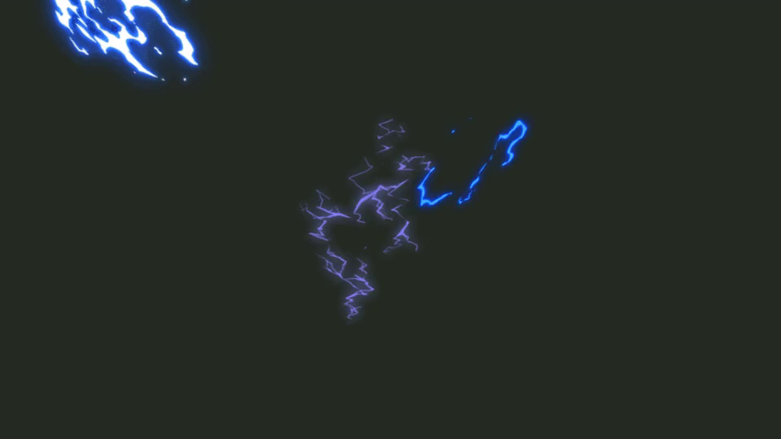
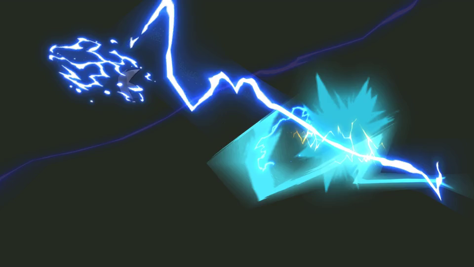
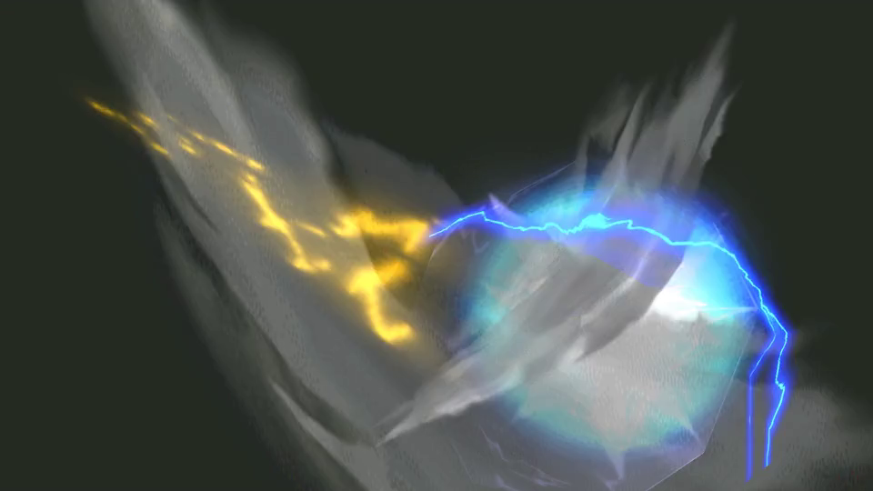

B02 / 091 · 165帧完整原序列
8 / 165 · 0.27s21 / 165 · 0.70s35 / 165 · 1.17s49 / 165 · 1.63s63 / 165 · 2.10s76 / 165 · 2.53s
90 / 165 · 3.00s
103 / 165 · 3.43s117 / 165 · 3.90s131 / 165 · 4.37s
145 / 165 · 4.83s158 / 165 · 5.27s